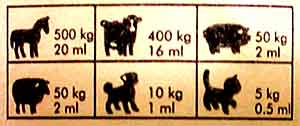
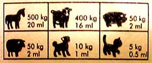
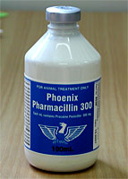

Case Scenarios
Case 6: penicillin
Here are three bottles containing different preparations of penicillin. Knowing that the suggested dose rate of penicillin in the horse is 20,000 iu/kg twice daily, what volume of each of these preparations must you give to a 560 kg horse which has a known Streptococcus sp. upper respiratory infection?
Depomycin (Intervet)
200,000 iu procaine penicillin and 200mg dihydrostreptomycin / mL
 

Duplocillin (Intervet)
150,000 iu (150mg) procaine penicillin and 150,000 iu (112.5mg) benzathine penicillin / mL.


Pharmacillin 300 (Phoenix)
300,000 iu procaine penicillin /mL.

What are the other details of the regimen you propose?
How does this volume of the drug compare to what is suggested on the label or in the product insert? Why are they different? How are they arrived at?
When you inject into a muscle mass in the horse, where can you inject?
What is the approximate volume you should inject into a particular im site?
Why do you think this might matter?
What happens when a huge volume is injected at one site?
And while you are thinking of absorption from the site, does it matter which site you use, in terms of drug kinetics?
ps
Units for penicillin were abandoned in 1968 everywhere except some parts of the USA where they still linger. 1mg = about 1660 units, or 600mg = 1 megaunit.
Answer
Your answer will appear here!
leave a comment
My Answer
Dose rate 20k IU twice daily. Dose 20k x 560 = 11.2M IU.
Depomycin
56mL The streptomycin is not useful and does not count.
Duplocillin
75mL The benzathine penicillin is too slowly absorbed to be much use against Strep equi.
Pharmacillin 300
37mL. Note that the label instructions are incorrect - they have confused mg and IU.
If you inject more than 20mL at one site, it will cause muscle damage and pain. Since the pencillin will have to be injected twice daily, you will need a lot of injection sites. The neck, pectoral muscles and gluteal muscles can be used, in that order of preference. There is some evidence in calves that absorption is slightly faster from the neck. The horse will quickly learn what is going to happen when it sees the syringe and needle and is likely to object. The best option is to give sodium or potassium benzylpenicillin iv.